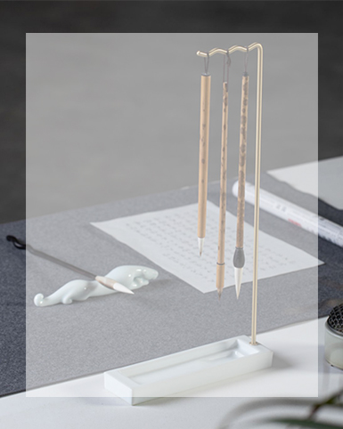
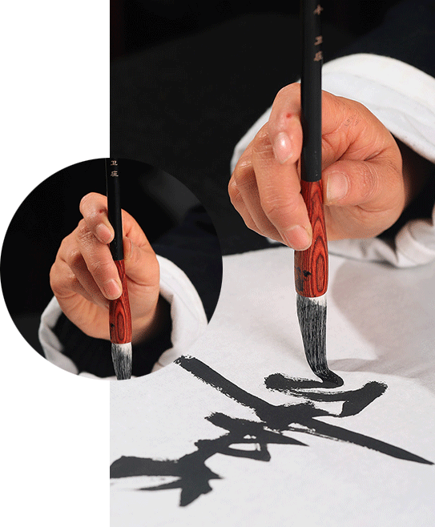

Back
HOW to USE

정확한 사용법은
붓의 수명을 연장시킬 수 있다
털을 살짝 쥐어준다
미지근한 물에 담근다
털을 살살 쓸어내린다
잉크를 묻혀 글씨를 쓴다
붓대가 수직이다
손끝에 힘을 주고 손바닥에 힘을 주지 않는다
손목과 팔꿈치를 허공에 올려놓다
펜을 너무 세게 쥐면 안 된다
붓대 가운데 위치 잡기

붓을 붓에 넣고 씻어 물속에서 몇 초간 이리저리 흔들어준
다음 펜촉을 바닥에 대고 가볍게 눌러 펜촉을 펴게 하고
다시 물속에서 몇 초간 가볍게 흔들어 붓을 꺼낸다.
깨끗해질 때까지 몇 번이고 반복합니다.
종이 한 장에 물기를 흡수하다.